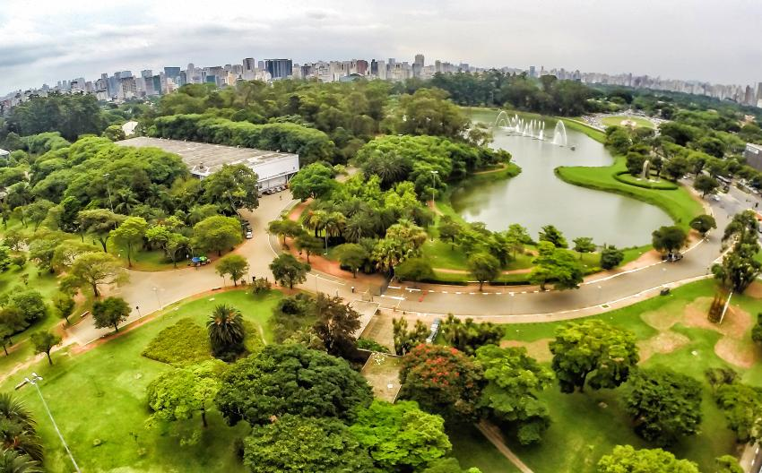

Sobre o parque
Um breve resumo
Inaugurado em 1954, durante as comemorações de 400 anos de São Paulo, o Parque Ibirapuera não só é o mais freqüentado e conhecido parque de São Paulo, como também uma das mais importantes áreas de cultura e lazer da cidade.
Idealizado por ícones, como Oscar Niemeyer, nos moldes de grandes parques mundiais (o Central Park, por exemplo), o Ibirapuera atrai todo o tipo de público. Desde os mais esportistas, que vão para aproveitar a pista de cooper, a ciclofaixa, o bicicletário com aluguel de bicicleta, as quadras, os campos de futebol e os aparelhos de ginástica; até os que vão em busca de cultura, freqüentadores da OCA, Pavilhão das Culturas Brasileiras, Museu Afro-Brasil, Fundação Bienal, MAC, MAM, entre outros.
Para quem busca somente ter um momento de tranqüilidade em meio à natureza, o Ibirapuera também é o local ideal, já que abriga 494 espécies vegetais, além de 35 de borboletas, dez de peixes, oito de répteis e 156 espécies de aves.
De fácil acesso através de transporte público (ônibus) e da ciclofaixa de lazer (Circuito Zona Oeste e Circuito Paulista Centro), é muito fácil entender porque este é um dos locais favoritos do paulistano. O parque conta com lanchonetes, áreas de estar, parque infantil, uma fonte multimídia e atividades o dia inteiro e todos os dias.
Sempre há o que fazer por lá e seu horário estendido foi feito especialmente para os que levam uma vida agitada em meio à metrópole, mas não abrem mão de seus momentos de lazer e descontração.
